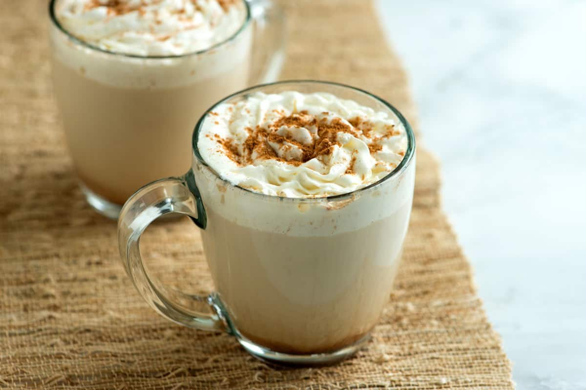

Pumpkin Spice Latte

Description
Make the popular coffee house pumpkin spice latte at home. Canned or
homemade pumpkin puree both work well in this recipe.
The moment Fall hits, we rush to our local coffee shop and order a pumpkin
spice latte. We love them so much, we took it upon ourselves to try making
it at home. This recipe is easy and I bet you have most, if not
everything, you need to make it at home right now. It also comes together
in under 10 minutes!
Ingredients
- 2 cups milk
- 2 tablespoons pumpkin puree, or more to taste
- 1 to 3 tablespoons sugar
- 1 tablespoon vanilla extract
- 1/2 teaspoon pumpkin pie spice, plus more for serving
- 1/2 cup strong hot coffee
- Whipped cream, for serving
Instructions
-
Heat the milk, pumpkin puree, sugar, pumpkin pie spices, and vanilla
extract over medium heat. Heat until hot but not boiling.
-
Remove from the heat and whisk in the vanilla, pumpkin pie spice, and
the coffee.
-
Divide the mixture between two mugs. Top with whipped cream and a
sprinkle of pumpkin pie spice.